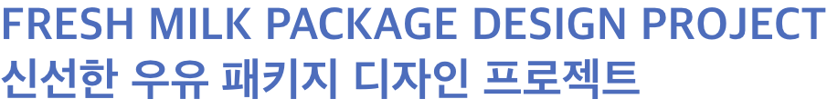
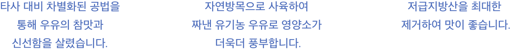
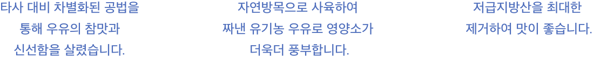
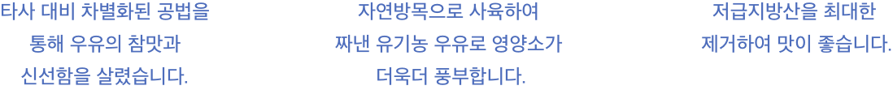
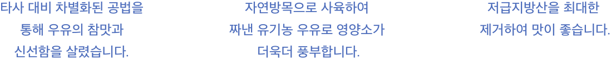

 



Fresh Milk는 자연 방목으로 사육하여 짜낸 유기농 우유로 영양소가 풍부하며 저급지방산을 최대한 제거하여 우유의 참맛과 신선함을 살린 우유입니다. 이러한 제품특성의 이점을 살려 Fresh milk를 효과적으로 전달하고자 젖소 일러스트를 통해 깔끔하고 신선한 느낌의 Fresh Milk를 표현하였으며 블루, 화이트 색상을 이용하여 심플한 느낌이 들도록 100% eco Fresh Milk 의 신선한 우유 패키지가 디자인 되었습니다.
제목을 나타내는 ‘Fresh’에는 Apple SD Gothic Neo : ExtraBold , ‘Milk’에는 Archivo Black : Regular, ’푸른 자연이 만든 맛있는 우유’와 본문내용에는 210 Computersetak를 사용해 상품명을 강조하였으며, 슬로건 글꼴로는 Apple SD Gothic Neo : ExtraBold 고딕체를 사용해 깔끔한 느낌으로 연출해 보았습니다.
Fresh Milk는 신선함을 살린 우유인만큼 깔끔하고 신선함을 컨셉으로 Fresh Milk를 표현하고자 하늘처럼 푸른 파랑을 메인 컬러로 사용하였으며, 베이스 컬러로는 하얀색을 사용하여 심플한 느낌이 들도록 100% eco Fresh Milk 의 신선한 우유 패키지가 디자인 되었습니다.